New method for monitoring steam injection for Enhanced Oil Recovery (EOR) and for finding sources of geothermal heat
Gordon Stove Adrok Edinburgh, Scotland gstove@adrokgroup.com
Dr G. Colin Stove Adrok Edinburgh, Scotland cstove@adrokgroup.com
Michael Robinson Adrok Edinburgh, Scotland mrobinson@adrokgroup.com
Summary
A database of over 10,000 wells with open hole logs, of which over 600 wells are dedicated surveillance wells with whole core, time lapse Carbon/Oxygen, Neutron, and Temperature data being used for evaluating Adrok’s deep penetrating radar system.
Kern River (California) is on its way to recovering 90% of its OOIP and surveillance is playing a significant role in achieving such a world class milestone. Future growth for development of the field and surveillance technologies still exist as well. To that end, we are looking at the possibly of surface only acquisition for Chevron’s surveillance needs.
Significant time and effort was spent on dielectric logging in the 1970’s – 80’s by operators and service companies. Adrok’s Atomic Dielectric Resonance (ADR) scanning technology claims to interact with the subsurface in the same region of the electro-magnetic spectrum as di-electric logging, but from surface measurement. First Principles predicts a rise in dielectric constant as temperature rises. Fieldwork was conducted during 2014 to 2016. The surveys were divided up into two groups, one for training (full access to database) and one for blind testing (no access to database). Surprisingly, the blind tests could detect the presence or absence of a single zone steam chest by a rise in dielectric constant at the correct space-time.
Atomic Dielectric Resonance (ADR) is a patented investigative technique (Stove, 2005) which involves the measurement and interpretation of resonant energy responses of natural or synthetic materials to the interaction of pulsed electromagnetic radio-waves from materials which permit the applied energy to pass through the material. The resonant energy response can be measured in terms of energy, frequency and phase relationships. The precision with which the process can be measured helps define the unique interactive atomic or molecular response behaviour of any specific material, according to the energy bandwidth used. ADR is measurable on a very wide range of hierarchical scales both in time and space. Time scales may range from seconds to femtoseconds, and spatial scales from metres to nanometres. The technology has been applied to help mining and petroleum companies in their search for subsurface natural resources, some of which are described in this contribution.
The body of the paper describes in greater detail the technology, field experiments and results to date for Chevron. Results from onshore geothermal heat exploration at a number of sites in New Zealand are also presented.
Key words: Electromagnetics, dielectric, radiowaves, Enhanced Oil Recovery, geothermal
INTRODUCTION
Ground penetrating radar (GPR) is a mature technology with applications in many areas; see for example (Daniels, 2004) for an overview. Almost all applications are restricted to imaging the subsurface up to a rather shallow depth, because of large losses of the signal when propagating through materials with free ions, which results in conductive losses determined by the soil conductivity. However in environments where these losses are low the depth penetration of GPR increases dramatically, allowing imaging up to depths of several kilometres, for example through the polar ice on Mars (Jordan et al., 2009) and Antarctica (Berthelier et al., 2005). Adrok has developed a radar based imaging technology under the name Atomic Dielectric Resonance (ADR) with the express purpose of extending the depth range of conventional GPR surveys, in addition to introducing other novel methods such as spectroscopy.
Although available to the market for over five years, Atomic Dielectric Resonance (ADR) technology is viewed with skepticism by certain industry geophysicists, many of whom erroneously dispute the systems depth penetration based on an incorrect application of the skin depth concept derived from Maxwell’s equations for planar waves in a conductor. Because the geophysical profession is looking for analytical as well as empirical results, the presentation of positive field results has unfortunately not appreciably resulted in new business for Adrok in the Oil Industry, in particular.
This paper will discuss the technology in more detail and then summarize the results of experiments which were performed to quantify the depth penetration possible with the system, and to explain the results theoretically with a propagation model based on Maxwell’s equations coupled to a ground model. A number of case studies will also be presented by way of empirical evidence of the technology’s efficacy in monitoring steam injection for Enhanced Oil Recovery (EOR) and for finding sources of geothermal heat.
METHOD AND RESULTS
Adrok has developed a Forward Model in collaboration with the University of British Columbia. In theoretical modelling and empirical field measurements, Adrok have observed that the high frequencies of its transmission pulses into the ground were found to penetrate very little, but the low frequency component had very low losses. Results were analyzed to estimate the skin depth and interpreted in terms of a constitutive model incorporating Maxwell’s equations with conductivity and polarization losses. In a separate experiment we successfully detected the reflection of the radar pulse from a body of water through 350m of rock. A numerical simulation of the model confirmed that these results do not contradict theoretical expectations. The directional radar pulse was emitted and recorded using equipment provided by Adrok Ltd (Stove, 2015). We recorded the pulse in air and show its temporal and spectral shape in FIGURE 1. The dominant frequency components are between 1MHz to 100MHz. We verified the directionality of the pulse by additional measurements in air.
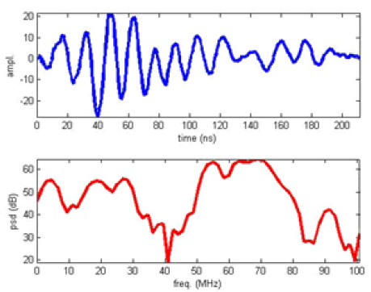 Figure 1: Transmitted ADR pulse and its power spectral density. 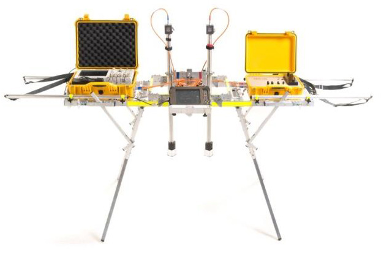 Figure 2: ADR Field Scanner System.The forward model developed (Doel et al., 2014) is outlined below (1) and (2):
- Maxwell equations coupled to ground model
- Propagate pulse straight down and back
- Collect voltage at virtual detector point
- Spatially variable ground parameters:
- Relative permittivity
- Conductivity
- Debye relaxation time
- 8th order finite-difference time-domain (FDTD) numerical simulation
- Perfectly matched layers (PML) at simulation boundaries
- Add Gaussian noise to simulation output
- All model parameters calibrated to experiments
- Ground model: permittivity, conductivity and polarization (P)
- E electric field, σ conductivity, τ Debye relaxation time, εr dielectric
Resulting system of partial differential equations:
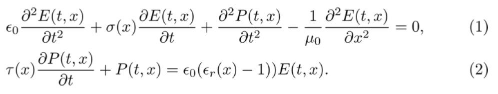When surveying for minerals, oil, and gas, companies will more often than not employ the staple methods of seismic and physical sampling, such as drilling. In recent years Adrok has been undertaking work with industry partners to explore different areas of the planet in an environmentally friendly way seeking to make the technology competitive on a global scale to search for hydrocarbons, minerals and general lithology.
Field surveys using ADR (FIGURE 2) can be carried out rapidly, usually with several sites of interest being scanned in a single day. The results are made available after processing using a suite of analysis software. Processing of the field data is the more time consuming aspect of the procedure. However, if one considers that for a typical survey the time to completely analyse the results might be two weeks or slightly more, this compares very favourably with other techniques.
In the field, three main types of surveys are conducted: WARR scans, P-scans, and STARE scans. A STARE scan repeatedly (typically 5000 times) transmits a pulse into the ground from a fixed location and the response is measured as a set of time domain traces at the same location. The repeats allow statistical analysis and noise reduction through techniques such as stacking and correlation analysis. A P-scan is similar, except that the transmitter-receiver assembly is moved at a constant speed over a scan line on the surface, to produce a time-domain image of a slice of the subsurface. This is probably the most widely used GPR scanning method. The WARR scan collects traces at different separations between transmitter and receiver and is used to map time to depth using hyperbolic move-out tracking and velocity spectrum analysis, similar to techniques used in seismic data analysis. It is essentially a triangulation procedure. In addition the WARR analysis provides a map of the dielectric permittivity (directly related to velocity) as a function of depth, which is an important indicator for the material composition of the ground.
Data processing involves several steps. A WARR analysis produces depth information from the time registered imaged traces. With the time to depth map obtained from the WARR analysis we can convert the time-domain STARES and P-scans into the spatial domain and localize features according to depth. Dominant reflections are extracted from the STARE scans and classified according to reliability using statistical methods. This allows the detection of very weak reflections that are not apparent from a simple visual inspection of the image display of the data, and remove artefacts due to environmental noise. Finally, the reflections are analysed for spectral content and subsequently compared to a database of material signatures.
The ADR signal generator produces a pulse of electromagnetic energy (frequencies typically range between 1MHz to 70MHz) that is fed to the antenna and is transmitted into the ground. Once the signal has been sent to the transmitting antenna a signal is sent to the receiving control unit to synchronise collection of the subsurface reflected data, which is collected through the receiving antenna and then digitized. The transmitted pulse is depicted in FIGURE 1 where we also show the power spectrum. It is not the usual localized pulse with a single centre frequency but a more complicated waveform. The higher frequency components allow accurate localization at shallow depths, but attenuate rapidly in the ground, while the lowest frequency component around 3Mhz can penetrate much deeper. We thus combine the advantage of high spatial resolution at high frequencies with the advantage of greater depth penetration at low frequencies at the expense of requiring more sophisticated analysis.
In order to enhance hydrocarbon recovery from a subsurface deposit, enhanced recovery methods employing steam (or other hot fluid) injection may be used, where steam is injected into the subsurface to aid recovery of the hydrocarbons. It is desirable, but not always simple, to determine where this steam flows subsequent to injection. One way of determining the flow of steam is by obtaining temperature measurement of the subsurface. Regions (e.g., layers) of elevated temperature may indicate the presence of injected steam.
Another possible application for determining subsurface temperatures is to locate sources of heat for geothermal applications.
Presently, temperature is measured by drilling subsurface and inserting thermometers. For some enhanced recovery hydrocarbon techniques, such measurements need to be made regularly, yet are costly to perform.
It would be desirable to provide a simpler and cheaper method of measuring temperature, and in particular subsurface temperature.
For the oil and mining industry ADR may be used to generate a virtual well log i.e. information equivalent to that derived from a drilled and logged well, and now a (corresponding) temperature profile.
The output may take the form of:
- Spectrometric material classification of subsurface layers - e.g. Virtual log providing material classification
- Image of the subsurface - e.g. Profile scan
- Logs:
- Dielectric Log - showing dielectric permittivity curves- a dielectric curve is produced by processing the WARR image. Hyperbolic curves are fitted to image features, the severity of the curve determining the dielectric constant of that layer. A specific example uses a WARR sampling interval of 2.5m and utilise two depth calculation algorithms (NMO and Ray Tracing) to produce accurate depth information from the dielectric curve fits by accurate parallax measurements over a number (e.g., 15) equally spaced cross positions which divide the hyperbolic curve and are used to test and measure any parallax measurements at each cross point of the curve so that the curve may be accurately defined to measure the best probable mean depth for the horizon.
- Energy Log: the energy log is produced by sub-sampling the P-Scan image data in equal time intervals. A Fourier Transform is conducted on each sub-image, whereby the energy and frequency content is computed. A mean energy decibel value is calculated for each sub-image, which provides the energy reading at that depth.
- Weighed Mean Frequency: the weighed mean frequency (WMF) log is produced by sub-sampling the P-Scan image data in equal time intervals. A Fourier Transform is conducted on each sub-image, whereby the energy and frequency content is computed. The frequency values are then modulated with the energy values to produce the WMF reading per depth interval; and
- Temperature profile.
Wave propagation through measured radar beam cross sections
The Beam Wavenumber (Bn) of the beam is:
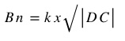Where: k = 2π/λ and √|DC| is the square root of the ››modulus of the dielectric constant, which is a measure of the electrical permittivity of the medium through which the beam is being propagated by transmission through the Radar Cross Section (RCA).
Considering a two dimensional RCA where the x-direction is horizontal to the surface of the ground and the z-direction is vertical; it will be appreciated that the x-direction is also the horizontal scan direction for moving W-Scans (WARR scans with variable focusing modes as the transmitter-receiver separation distance increases during the scan) or moving P-scans.
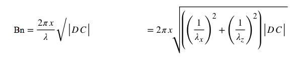This formula clarifies the relationship between Bn, λ and DC.
The energy density (ρ) of ADR radiation through a layered RCA medium should increase with the absolute temperature in accordance with Stefan Boltzmann’s Law:
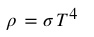The ADR Spectral Energy Density Ed(S) is the product of the energy density and the wavelength:
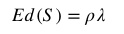This is a measure of the energy density contained within a wavelength range of distance (i.e., it is the Energy Density within a wavelength). The wave is a progressive wave and it travels along according to the progressive wave direction (PWD). Hence for the two dimensional RCA now being considered, the vector PWD can be resolved in terms of two components: λx, the horizontal component and λz, the vertical component.
Considering, as an example, the RCA medium of steam, where steam consists of OH molecules of water. This is a moving medium which diffuses through the rock layers according to thermodynamic principles of diffusion and cooling. In order to compute the vector and static relationships involved, boundary conditions should be established at a comprehensive range of temperatures so that the ADR relationships can be used to predict temperature values for the steam vector displacements.
Consider the horizontal component α of vector PWD of the ADR beam, this is a function of spectral energy density, more specifically:
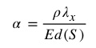Then
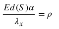Therefore:
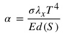And, rearranging, it can be seen that the temperature T can be calculated by:
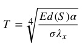Where: α the horizontal component of vector PWD of the ADR beam.
Horizontal component λx is computed in the x-scanning, horizontal direction computed according to the separation distances (i.e. the horizontal azimuthal distances between the stationary (Rx) receiver and the moving (Tx) transmitter during a WARR scan. There are 15 computation points called Crosses (from C1 (Rx stationary position) to C15 (the last x co-ordinate along the WARR Scan line). Hence there are 14 vector move-out computations for components λx.
The spectral Energy Density Ed(S) is computed and measured from the Scan Data from each quantised image layer from the surface to the Range Time value set. In the WARR scan examples above, the quantised layers were 1m thick from the ground surface (Time Zero position) to 10m in depth from the surface. Thereafter each quantised layer was sub-sampled every 2.5m to the maximum range position.
Methodology for measuring temperature
The Predicted Temperature Models developed for normal investigation of cold and hot oil reservoirs may be summarised in TABLE 2. The same temperature models may be applied to extremely cold ground layers such as permafrost zones, in this case the modelling can optionally stop at PT3 which seems to give the best results when compared with Borehole Thermistor Records.
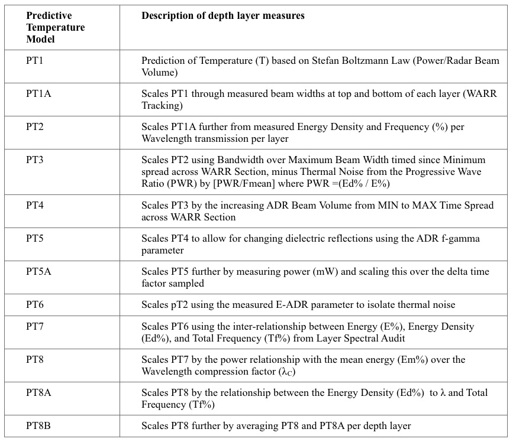 Table 2: Predicted Temperature ModelsThe first step is a first predictive temperature PT1 Computation. This may be described as the Basic prediction of Temperature from Stefan Boltzmann’s Law, considering the ratio of Power and Transmitted Beam Volume through each Geological Layer divided in equal quantised thicknesses, as described above. An alternative form of the law is in terms of the excitance M: the power emitted by a region of surface divided by the area of the surface. The excitance is a measure of the brightness or radiance of the electromagnetic emission. Because the excitance through a layer of rock is proportional to the energy density through the layer, M is also proportional to T4 and therefore: M= σT 4
where σ is the Stefan Boltzmann Constant.
As such, the first predictive temperature PT1 (in degrees centigrade) may be calculated by:
PT1= ((5P)/(A*5.67051*10-8))^0.25-273.15)/1024
where P is power (mW) and A is the beam cross section area (m2) at right angles vertically to the Z axis (paraxial ray).
More specifically a loss function for P(mW) may be calculated per layer as follows:
P(mW)= V(v)^2*DC*1000, and
V(v)=ABS((20*10^-3)-(20*10^-3)*Depth(m)*0.02*(DC/80)
Where: DC is the layer Dielectric Constant.
The variation of PT1 temperature calculation with depth for exemplary experimental data for thermal prediction from a WARR and STARE Scan over an area of thick permafrost, shows that the predicted temperature PT1 only rises slightly above 0°C from 33.5m in depth to 402.6m in depth. The Borehole temperature from thermistor readings maintains a very level gradient around 0°C.
The method may further comprise performing a number of scaling computations on the resultant temperature PT1. The first of these, to obtain second temperature estimate PT1A comprises:
PT1A=( ((PT1)/16)*(Φ(1-max)C2))/((Δλx)C2).
Note that this formulation provides a better scaled relationship than PT1, based on the metrics Φ and Δλx for position C2 on the WARR Line, where Φ is the beam diameter in y-plane (at position C2 near the start of the WARR Scan) and Δλx is the computed wavelength at C2 in the X-scanning direction from the NMO computations.
Referring to the same exemplary experimental data discussed above, variation of the PT1A temperature with depth shows a more variable predicted thermal gradient down to 140m, after which it levels off very much in line with the borehole gradient. However, the graph shows three sharp thermal anomalies. Since this algorithm depends on the measured beam width and compressed wavelength, the anomalies could represent locations where the beam has polarised giving a false rise in temperature. The polarisation in this case could be related to a sudden change in mean dielectric constant of the permanently frozen ground layer (e.g. through the presence of near surface boulder beds)
The PT1 temperature may be further scaled to obtain a third temperature estimate PT2, by defining the mean resonant predicted temperature. This PT2 is a function of PT1 and the ratio of energy density ρ and signal frequency f%. It is a more realistic prediction than PT1 because it considers the ratio of energy density within a wavelength to the frequency percentage and in this case, removes biases caused by sudden polarisation changes due to variable dielectrics.
PT3 is a third thermal computation of predicted temperatures, which in this case is not expressed as a function of pT1 or pT2. It is concisely expressed as a function of the Total Frequency percentage, the Bandwidth and the wavelength compression. The predictive formula is:
PT3 = ((Tf%/Bw) * λH)
where Tf% is the total frequency percentage from FFT Analysis of the layer thickness (in TWT-Two Way Travel time), Bw is the Bandwidth of the signal analysed and λH is the compressed wavelength in the depth range direction.
The PT3 predictive temperature variation with depth in the exemplary experimental data more closely follows the thermistor records at around 0°C. It is interesting that this algorithm, which is completely different from the PT2 algorithm should faintly describe the same 10 short peaks described in the equivalent PT2 data.
A fourth thermal computation of predicted temperatures PT4 is simply the Layer Average Predicted Temperature of the PT2 and PT3 predicted values.
A fifth thermal computation of predicted temperatures PT5 comprises scaling and multiplying the predicted PT4 values by the F-Gamma values for each layer. One advantage of this is to magnify polarisation changes at dielectric boundaries; e.g. in permafrost layers, in hot oily sand layers with dielectric boundaries or in hot steamy sand layers with sharp dielectric boundaries, so that these geothermal layers can be mapped with depth.
A sixth thermal computation of predicted temperatures PT6 is a scaling parameter for PT2
PT6 = ((1-V) * PT2) +32
Where: V= ((1-0.5) * (L-MINL) / ((MAXL)-(MINL)))+0.5, and L= (E-ADR^2).
A seventh thermal computation of predicted temperatures PT7 scales PT6 using the inter-relationship between the following variables derived from the Spectral Layer Audit by FFT Analysis:
PT7 = ((((100- E%)*8) – (ED%/100) + Tf% + 20) / 1024)
Where: E% is Energy; ED% is the Energy Density and Tf% is the Total Frequency.
An eighth thermal computation of predicted temperatures PT8 scales PT7 by the power relationship with the mean energy (Em%) over the Wavelength compression factor (λC), thereby providing a more precise aspect ratio because of the more accurately computed wavelength compression λc , as follows:
PT8 = (((P*(Em%/10) - 1.6)) + (λC /32))*1.6)+4
Where: P is power (mW) and P = (ABS ((20*10^-3)-(20*10^-3)*Depth *0.02 * (DC/80)) ^2*DC*1000
and where: Depth=Depth(m) and D=DC (Dielectric Constant).
Note that Wavelength compression factor λC is different to Wavelength compression factor λH. Wavelength compression factor λH only measures wavelength compression in the depth range direction (horizon depth direction) while wavelength compression factor λC considers wavelength compression in the scanning X-direction also, In this way, wavelength compression factor λC is a two dimensional vector giving a more precise aspect ratio for the resulting predicted temperature graph.
An additional thermal computation PT8A Scales PT8 by the relationship between the Energy Density (Ed%) to λ and Total Frequency (Tf%) as follows:
PT8A = (PT8 * ρ / (Tf% * Φ (1-20) C2)); (Φ at WARR Position C2)
Finally, thermal computation PT8B is simply the average of PT8 and PT8A for each layer.
Any of these temperature estimates can be used as an estimate of the temperature for a particular layer or subsurface region.
Case Studies
Case studies will also be presented during the oral presentation by way of empirical evidence of the technology’s efficacy in monitoring steam injection for Enhanced Oil Recovery (EOR) activities for Chevron in California (FIGURE 3) and for finding sources of geothermal heat in the Taupo Volcanic Complex, New Zealand at sites operated by Contact Energy (FIGURE 4).
CONCLUSIONS
The results from experiments and commercial field surveys, as well as the numerical model simulation suggest that the exploration depth of pulsed radar can be increased significantly by including a low frequency component. Our data suggests the high losses of Ground Penetrating Radar (GPR) in the 10 - 1000MHz range are due to polarization effects, rather than conductivity losses.
We present techniques of remotely measuring temperature effects in the ground from the ground surface level using Adrok’s deep ranging pulsed radar technologies. The ability to utilise ADR technologies for determining subsurface temperatures pre-drilling would generate large cost savings as well as environmental savings for monitoring steam injection for Enhanced Oil Recovery (EOR) and for finding sources of geothermal heat.
We believe that these experiments and case studies are encouraging and warrant further investigations.
ACKNOWLEDGMENTS
We wish to thank Chevron and Contact Energy for working with us on the field projects.
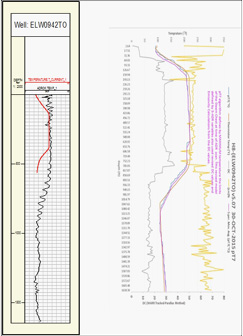 Figure 3: The grey curve in the right-hand-side graph represents ADR measured dielectrics and the blue curve is ADR predictive temperature measurement. Temperature and dielectrics tracked to just over 1600ft depth below ground level. The left-hand-side graph shows Chevron’s downhole temperature curve in red line and ADR predictive temperature in black line. 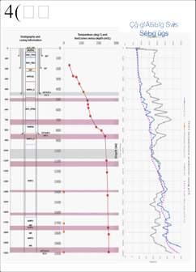 Figure 4: Lithology, temperature and dielectrics tracked to 2000m depth below ground level. Red dots indicate known temperature measurements. The orange dots indicate the presence of steam. The grey curve in the right-hand-side graph represents ADR measured dielectrics and the blue curve is ADR predictive temperature measurement.References
- Berthelier, J. J., Bonaime´,S, Ciarletti, V., Clairquin, R., Dolon, F.,Le Gall, A., D. Nevejans, Ney, R.,and Reineix, A., 2005, Initial results of the Netlander imaging ground-penetrating radar operated on the Antarctic Ice Shelf: Geophysical research letters, vol. 32, L22305.
- Daniels, D.J., 2004, Ground Penetrating Radar (2nd edition): The Institute of Electrical Engineers.
- Doel, van den, K., Jansen, J., Robinson, M., Stove, G. C., and Stove, G. D. C., 2014 Ground penetrating abilities of broadband pulsed radar in the 1-70MHz range. SEG Technical Program Expanded Abstracts 2014: pp. 1770-1774. SEG Denver 2014 Annual Meeting.
- Jordan, R., Picardi, G., Plaut, J.,Wheeler, K.,Kirchner, D.,Safaeinili, A.,Johnson, W.,Seu, R., Calabrese, D.,Zampolini, E.,Cicchetti, A.,Huff, R.,Gurnett, D.,Ivanov, A., Kofman, W., Orosei, R., Thompson, T., Edenhofer, P., and Bombaci, O., 2009, The Mars express MARSIS sounder instrument:Planetary andSpaceScience 57, 1975–1986.
- Stove, G. C., 2005. Radar Apparatus for Imaging and/or Spectrometric Analysis and Methods of Performing Imaging and/or Spectrometric Analysis of a Substance for Dimensional Measurement, Identification and Precision Radar Mapping, USA Patent No.: 6864826, Edinburgh, GB: US Patent Office.
- Stove, G. D. C., and Doel, van den, K., 2015, Large depth exploration using pulsed radar. In: ASEG-PESA Technical Program Expanded Abstracts 2015, Perth. 1–4.